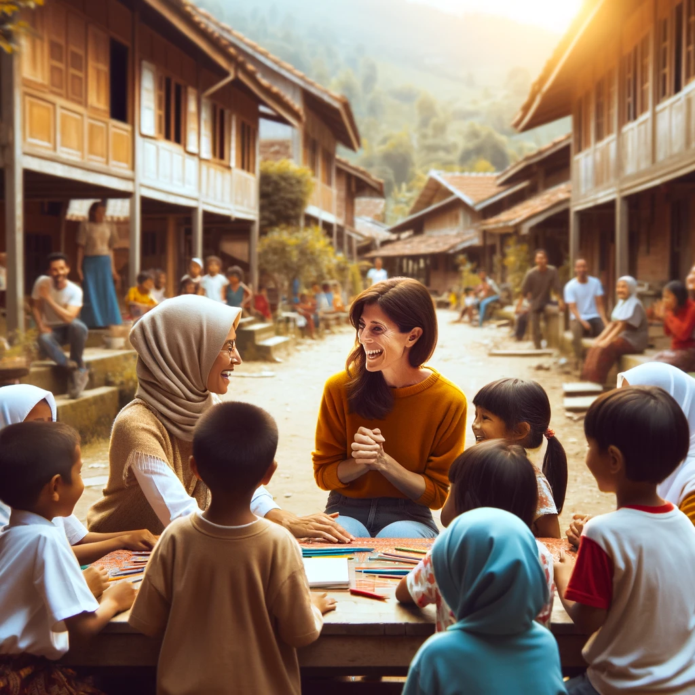

Love Script
By Peili Jiang, Michael Han, and Zephyr Luo
Press "↓" to start
Stage 1: Birth
Stage 2: Adolescence
Stage 2: Adolescence
Stage 2: Adolescence
Stage 3: Middle-ages
Stage 3: Middle-ages
<<<<<<< HEAD
Stage 3: Middle-ages
Stage 3: Middle-ages

Stage 3: Middle-ages
Inspired by the tumultuous environment, the character is drawn to activism, where their experiences shape their understanding and expression of love.

Stage 3: Middle-ages
Inspired by the tumultuous environment, the character is drawn to activism, where their experiences shape their understanding and expression of love.
Stage 3: Middle-ages
The decision shapes their reputation and self-esteem, setting the stage for resilience but also lingering animosity.
Stage 3: Middle-ages
The decision fosters creativity and independence, yet it also means missing out on forging deeper social bonds.
Stage 3: Middle-ages
The decision deepens their interpersonal connections, providing emotional support but perhaps enabling avoidance of their own deeper issues.
Enduring Romance
Ending: After years of ups and downs, the characters choose to commit to each other, overcoming their biggest obstacles. The scene closes on a wedding day, symbolizing their enduring love and dedication.
Key Message: Romantic love requires commitment and growth through challenges.
Divorce
Ending: The character goes through a bitter divorce that leaves deep scars. While they achieve professional success, their personal life remains colored by the cynicism and distrust spawned from their marriage's end.
Key Message: Childhood insecurities make them unable to trust people and rely on each other. As we can see, ACE can affect the future dispositions
Rekindled Friendship
Ending: After a significant misunderstanding, the characters work through their issues, leading to a heartfelt reunion and a stronger friendship than ever before.
Key Message: True friendship can withstand trials and misunderstandings.
Family Reunion
Ending: A family torn apart by past resentments comes together in a time of crisis, learning to forgive and cherish their bonds.
Key Message: Familial love is about forgiveness and unity.
Sacrificial Love
Ending: The main character makes a significant sacrifice for the benefit of someone they love, which leads to a bittersweet but noble conclusion.
Key Message: Love sometimes requires selflessness and sacrifice for the greater good of the loved one.
Love Lost and Found
Ending: After a separation, the characters find their way back to each other, realizing they are better together than apart, demonstrating the resilience of love.
Key Message: Love can be rediscovered and strengthened after loss.
Unrequited Love Resolved
Ending: The character comes to terms with unrequited love and moves forward, finding peace and new possibilities in other aspects of life.
Key Message: Not all love is reciprocated, but personal growth and new beginnings are always possible.
Community Connection
Ending: The main character finds a sense of belonging and love within a community that shares their values and passions.
Key Message: Love extends beyond personal connections to include community and shared experiences.
Eternal Legacy
Ending: An elderly character passes away, but their legacy of love and lessons profoundly impacts future generations, showing love's eternal influence.
Key Message: The love we share leaves a lasting impact beyond our lifetime.
Adventurous Love
Ending: The characters decide to travel the world together, finding new aspects of their relationship and bonding over shared adventures.
Key Message: Love can be a grand adventure that brings two people closer in unexpected ways.
Stage 3: Middle-ages
The decision deepens their interpersonal connections, providing emotional support but perhaps enabling avoidance of their own deeper issues.
Stage 3: Middle-ages
XXX想成为XXX的逛街助手

然后，XXX和XXX一起去很多地方玩

XXX也想和XXX一块成为一对吃货

再然后，他们会搬到了一起

再然后，XXX会开始学习她的技能

煮饭

那时候，每天早上，他们吃着自己做的美食

然后在同一个站台，高高兴兴的一起上班
XXX会感觉自己好幸福。
因为自己有了家
那个有XXX在的地方

他们可能偶尔也会吵架

XXX不想这样


一定是我有什么做的不对，XXX会这么想
如果没有XXX在身边，窗外就没有风景

如果没有XXX在身后


XXX又怎会飞的更高更远
XXX不想这样。他要为XXX改变自己
XXX不知道XXX喜欢什么，但他一定会满足她的一切。


我愿意一直陪伴着你
爱情就像花草一样
需要用包容来浇灌

直到一天，XXX不想让自己后悔
XXX开始准备一份惊喜


看着惊喜一点点准备好了 XXX好开心 因为他想象着XXX看到时 开心的样子

想想未来他们或许 会有一辈子 XXX好开心 或许他可以和XXX一起 去全世界好多地方玩
XXX也会继续努力
为了他和XXX的梦之城堡

XXX很幸福，因为他遇到了XXX。他相信后面的每天都会是快乐的
简简单单，体会与XXX在一起的每一个刻
XXX想和XXX一起过幸福的生活


永远有多远？
比时间多一秒就是永远，我会永远爱你
世界有多大？
你走到哪里，世界就有多大
你就是我的Lover


我爱你
I love you

我相信，XXX和XXX的故事会一直继续下去。
无论精彩、平淡都会是他们喜欢的。
XXX，我爱你
-- 按“Esc"键有惊喜